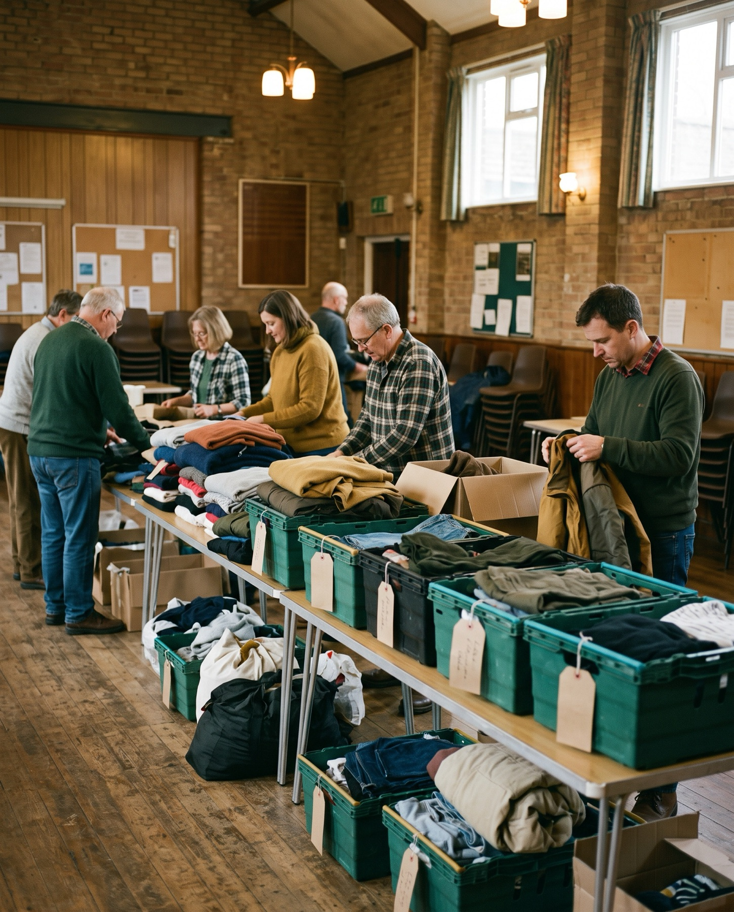
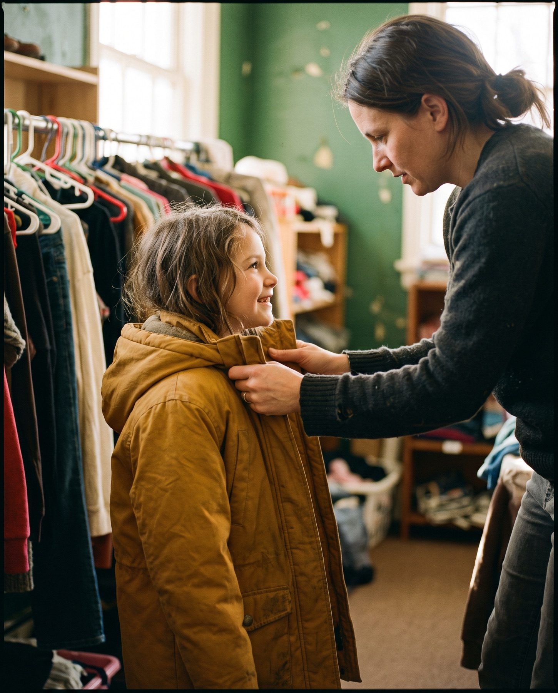
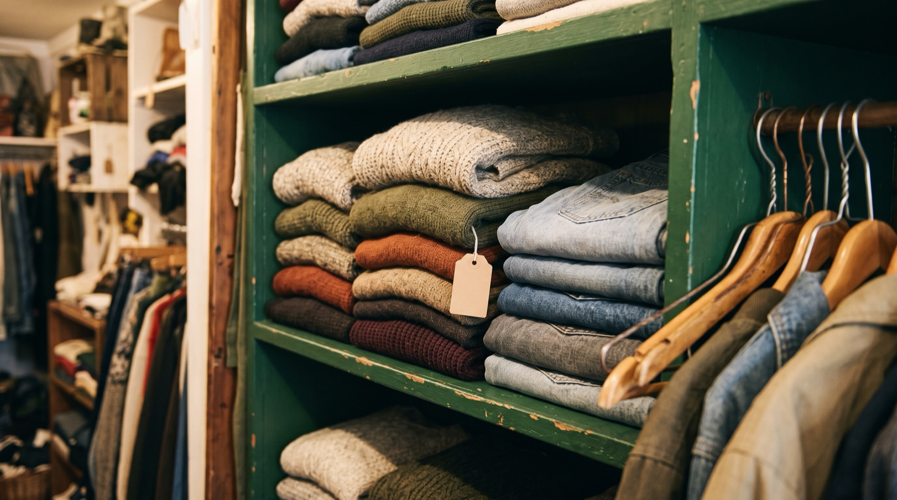
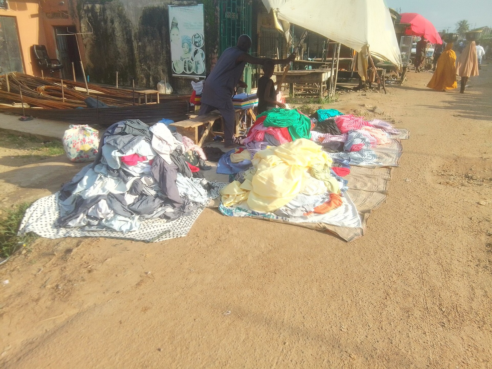
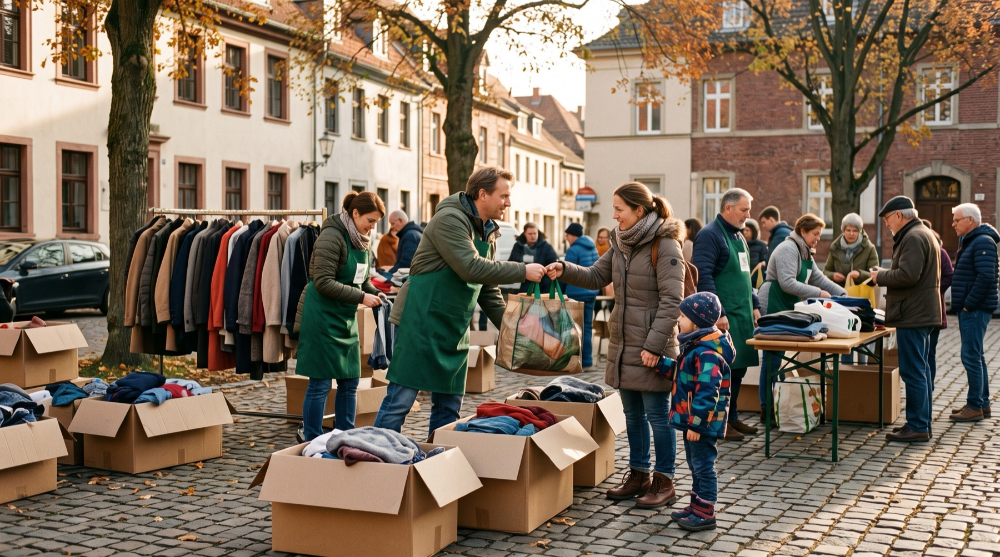

Care-for-Rare Foundation
- Strength
- Easy online donations and free shipping.
- Weakness
- Donors cannot choose who receives their clothes.
- What ReWear does
- Matches each garment to a real request and shows it on the tag.
ReWear takes the clothes you no longer wear, sorts them by size and season, and passes them to families who need them.


Four steps from your wardrobe to someone else's, and every garment carries a tag you can follow.

Register what you give, then drop it at a hub or book a pick-up.
Volunteers check each piece and file it by size, season, gender and condition.

Verified families request what fits. Everything else goes to the second-hand outlet.
The family collects it, and the donor sees on the tag where it went.
of clothing kept in use instead of thrown away, counted from every tag that was not recycled.
garments handed over to a new owner
households helped through requests
These are demo figures, computed live from the sample data in this prototype. Sort a donation in the admin panel and they change.
Clothes that no family has requested go on sale at small prices. Every euro pays for sorting, storage and transport. Open the outlet
Need changes with the weather. Three times a year we collect for one thing in particular.
Many people throw away clothes that are still in good condition. At the same time, low-income families struggle to afford clothing. Textile waste grows, and so does inequality.
ReWear connects people who want to give clothes with people who need them. Donate, browse and request reusable clothing on one simple platform, and see where every piece ends up.


No clothes to give? Money pays for the hubs, the hangers and the van. Choose an amount and finish on the next page.